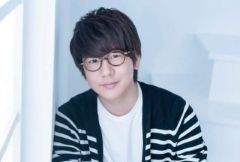
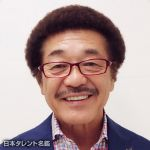
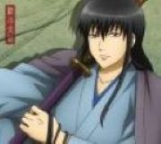

プロフィール
名前：山田 聖英
性別：MAN
住所：佐賀県藤津郡太良町
生年月日:２００５年６月２６日
同じ日生まれの有名人は、
花江夏樹/声優

引用元：https://www.animatetimes.com/news/details.php?id=1605973638
具志堅用高/元プロボクサー

引用元：https://narrow.jp/talent/2197
アニメキャラは、
桂小太郎/銀魂

引用元：https://sumapo.com/image/45327.html
とかいるよ
☆山田聖英の成り立ち☆
２００５年６月２６日 ☆生☆誕☆
２００７年４月 松寿保育園入園
２０１２年４月 大浦小学校入学
２０１８年４月 大浦中学校入学
２０２１年４月 白石高等学校商業科キャンパス入学
２０２４年４月 佐賀コンピュータ専門学校入学
☆その他もろもろ☆
やってた部活・クラブ
小学校：バドミントン・カードゲーム・実験クラブ(部長)
↳正直カードゲームクラブめっちゃ楽しかった
中学校：軟式野球(3年間)
↳初めて始めた運動部ということもあり、きつかったけど楽しかった。
高校：デジタルスキル部eスポーツ部門(初代部長)
↳最高成績はフォールガイズの全国大会で補欠枠で入ったことです(恥)
専門：とくにやってないです
今後やってみたいこと
①ソロか友達で旅行に行きたい
☝いくなら京都とか岩手に行きたい
②飲食の名店に行って本家の料理を食べてみたい
☝せっかく就職先が北九州市になるし、本場の屋台ラーメン食べたい
③趣味全開の一部屋とか作ってみたい
☝これをしたいぐらいの趣味を見つけたい